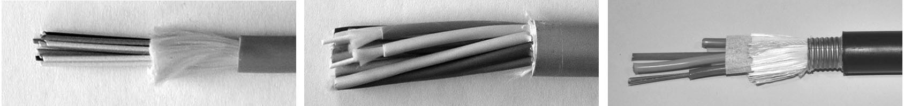
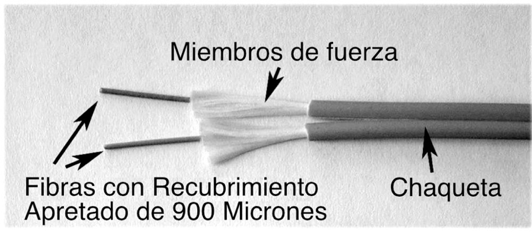
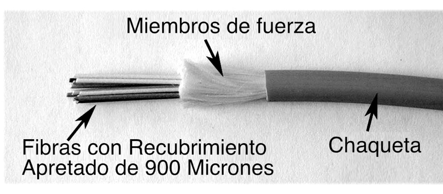
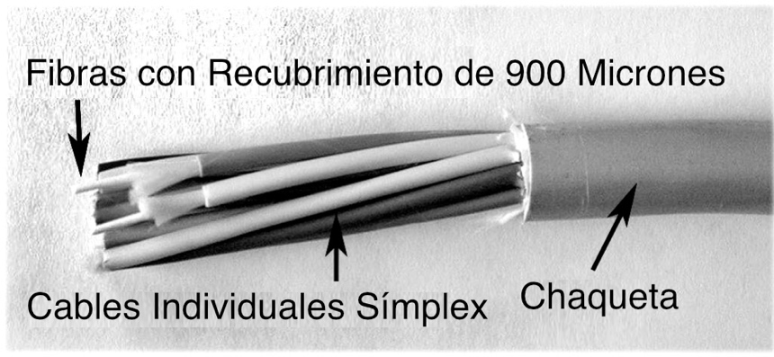
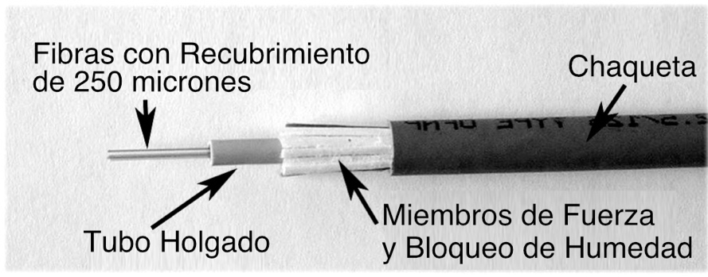
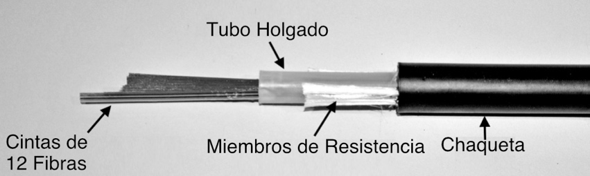
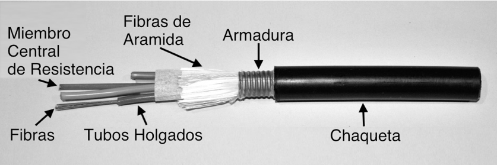
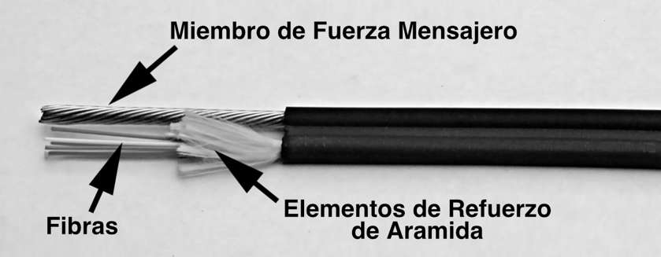
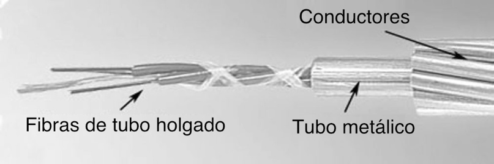
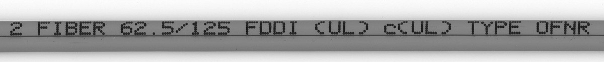

Libro FOA · Capítulo 05
Cables de fibra óptica
Construcciones de cable, protección, aplicaciones, selección y códigos de identificación.
En este capítulo
Qué aprenderás
- Los tipos de cables de fibra óptica y sus aplicaciones
- Diferencias entre los cables de planta exterior y los de predios o interior
- Especificaciones de los cables de fibra óptica

Diseño de Cables de Fibra Óptica
El cable de fibra óptica proporciona una protección a la fibra o fibras ópticas que contiene adecuada para el entorno en el que se va a instalar. Por cable se entiende el conjunto completo de fibras, elementos de resistencia y cubierta. Existen muchos tipos de cables de fibra óptica, en función del número de fibras y de cómo y dónde vayan a instalarse. Es importante elegir el cable con cuidado, ya que influirá en la facilidad de instalación, empalme o terminación, el coste y la duración.
El trabajo del cable es proteger las fibras del entorno que se encuentra en cualquier instalación. En exteriores, depende de si el cable se entierra directamente, se introduce en un conducto, se tiende por aire o incluso se coloca bajo el agua. ¿Se mojará o humedecerá el cable? ¿Tendrá que soportar una gran tensión de tracción para su instalación en conductos o una tensión continua en una instalación aérea? ¿Estará expuesto a productos químicos o tendrá que soportar una amplia gama de temperaturas? ¿Y si lo roe una ardilla, una marmota o un perrito de las praderas? En interiores, los cables no tienen que ser tan resistentes para proteger las fibras, pero tienen que cumplir todas las disposiciones del código de incendios, por lo que la cubierta del cable tiene que ser ignífuga.
Construcción de Cables
Todos los cables se componen de varias capas de protección para las fibras. La mayoría empiezan con fibra estándar con una recubrimiento primario (250 micrones de diámetro) y añaden:
Recubrimiento Secundario o Búfer Ajustado (tight buffer) (para cables de búfer ajustado como los de tipo simplex, zipcord, distribución y breakout)
Una suave capa protectora de 900 micrones de diámetro exterior se aplica directamente a la fibra recubierta de 250 micrones para proporcionar protección adicional a la fibra, permitiendo una manipulación más fácil y la terminación directa mediante la aplicación de un conector en la fibra.
Tubos Holgados (loose tubes)
Los tubos de plástico pequeños y finos que contienen hasta una docena de fibras con recubrimiento de 250 micrones se utilizan para proteger las fibras en cables clasificados para uso en plantas exteriores. Permiten aislar las fibras de la alta tensión de tracción y pueden rellenarse con materiales que bloquean el agua (gel, cinta seca o polvo) para evitar la entrada de humedad.
Miembros de Fuerza
Los elementos de resistencia suelen ser hilos de aramida, los mismos que se utilizan en los chalecos antibalas, a menudo denominados por la marca Dupont Kevlar, que absorben la tensión necesaria para tirar del cable y proporcionan amortiguación a las fibras. Las fibras de aramida se utilizan no sólo porque son fuertes, sino porque no se estiran. Si se tira de ellas con fuerza, no se estiran, sino que acaban rompiéndose cuando la tensión supera sus límites. Esto garantiza que los elementos resistentes no se estiren y luego se relajen, atascando las fibras en el cable. El método adecuado para tirar de los cables de fibra óptica es siempre fijar la cuerda de tracción, el alambre o la cinta a los elementos de resistencia.
Algunos cables también incluyen una varilla central de fibra de vidrio que se utiliza como refuerzo adicional y para dar rigidez al cable y evitar que se retuerza y dañe las fibras. Cuando se incluyen, estas varillas deben fijarse a anillas de tracción giratorias para la tracción y a abrazaderas en cierres de empalme o paneles de conexión cuando se empalman o terminan. En la actualidad, pocos cables utilizan elementos de refuerzo metálicos, ya que complican la instalación al requerir que el cable esté debidamente conectado a tierra y unido.
Cubierta del Cable (jacket)
La capa más externa de protección de las fibras que se elige para soportar el entorno en el que se instala el cable. Los cables de exterior suelen ser de polietileno (PE) negro, que resiste la humedad y la exposición a la luz solar.
Los cables de interior utilizan cubiertas ignífugas que pueden codificarse por colores para identificar las fibras del interior del cable. Algunos cables de exterior pueden tener cubiertas dobles con una resistente capa de armadura entre ellas para proteger de la masticación de los roedores o Kevlar para dar resistencia y permitir la tracción por las cubiertas.
Los cables de interior suelen tener una cubierta de PVC (policloruro de vinilo) ignífugo para uso general o en tubos ascendentes y algún otro plástico especial para uso en cámaras impelentes en zonas de tratamiento de aire. Los cables de interior-exterior suelen tener una cubierta exterior de PE que puede retirarse para dejar al descubierto una cubierta interior ignífuga para su uso en el interior de edificios.
Protección Contra Agua y Humedad
Los cables instalados en el exterior requieren proteger las fibras del agua. Para evitar que el agua penetre en el cable y dañe las fibras, se utiliza un gel o, como es cada vez más habitual, cinta o polvo absorbentes.
Por lo general, esto se aplica a los cables de tubo holgado o de cinta, pero el bloqueo de agua en seco se utiliza en algunos cables de búfer ajustado (tight buffer) que se emplean en tramos exteriores cortos, como de edificio a edificio en un campus o a una antena inalámbrica exterior o cámara de CCTV.
Protección Contra el Aplastamiento o la Penetración de Roedores
Algunos cables tienen una armadura, normalmente metálica pero a veces de plástico duro, bajo la cubierta exterior para resistir las cargas de aplastamiento, como los cables instalados bajo el suelo en centros de datos o en suelos rocosos, así como para evitar la penetración de roedores. La armadura metálica requiere que el cable esté debidamente conectado a tierra y unido.
Tipos de Cables de Fibra Óptica
Tipos de Cables con Recubrimiento o Búfer Ajustado (Tight Buffer)
Existen dos tipos básicos de cables, generalmente definidos como de búfer ajustado y de tubo holgado. Los cables con búfer ajustado (simplex, zipcord, distribución y breakout) se utilizan en aplicaciones de predios en las que la flexibilidad del cable y la facilidad de terminación son importantes, más que la robustez y la resistencia a la tracción que caracterizan a los tipos de cable de tubo holgado y de cinta.
Por lo general, los cables recubrimiento o búfer ajustado se utilizan en interiores y los cables de tubo holgado o cinta, en exteriores.
Cables Simplex y Duplex (zipcord)

Estos tipos se utilizan sobre todo para aplicaciones de patch cord y backplane, pero el zipcord también puede utilizarse para conexiones de conexión de escritorios. Los cables símplex son de una fibra, con búfer ajustado (recubierto con un búfer ajustado de 900 micrones sobre el recubrimiento primario) con miembros de resistencia de Kevlar (fibra de aramida) y revestidos para uso en interiores. El revestimiento suele tener un diámetro de 3 mm (1/8 pulg.). El cable duplex (zipcord) es simplemente dos de estos cables unidos por una fina malla.
Cable de Distribución

El cable de distribución es el más popular en interiores, ya que es pequeño y ligero. Contienen varias fibras con recubrimiento o búfer ajustado agrupadas bajo la misma cubierta con elementos de resistencia de Kevlar y, a veces, refuerzo de varilla de fibra de vidrio para dar rigidez al cable y evitar que se plieguen. Estos cables son de pequeño tamaño y se utilizan para tendidos cortos, conductos secos, y aplicaciones que requieran instalaciones verticales y plenum. Las fibras tienen doble recubrimiento y pueden terminarse directamente, pero como sus fibras no están reforzadas individualmente, estos cables deben de instalarse en una "caja de separación" (breakout box) o terminarse dentro de un panel de conexiones o una caja de empalmes para proteger las fibras individuales.
Cable Breakout

El cable "breakout" es uno de los favoritos cuando se necesitan cables resistentes o una terminación directa sin cajas de empalme, paneles de
conexión u otros accesorios. Están formados por varios cables símplex agrupados dentro de una cubierta común. Se trata de un diseño fuerte y resistente, pero es más grande y más caro que los cables de distribución. Es adecuado para tendidos de conductos y aplicaciones de instalaciones verticales y plenum. Es perfecto para aplicaciones industriales en las que se necesita robustez. Como cada fibra está reforzada individualmente, este diseño permite una rápida terminación en conectores y no requiere paneles o cajas de conexión. El cable breakout puede resultar más económico cuando el número de fibras no es demasiado grande y las distancias demasiado largas, ya que su terminación requiere mucho menos trabajo.
Cable de Tubo Holgado

Los cables de tubo holgado son los más utilizados para troncales de planta externa porque ofrecen la mejor protección para las fibras sometidas a grandes tensiones de tracción y pueden protegerse fácilmente de la humedad con gel o cintas que bloquean el agua. Estos cables se componen de varias fibras juntas dentro de un pequeño tubo de plástico, que a su vez se enrollan alrededor de un elemento de resistencia central, rodeado de elementos de resistencia de aramida y revestido, lo que proporciona un cable pequeño con un elevado número de fibras. Este tipo de cable es ideal para aplicaciones de canalización en plantas exteriores, ya que puede fabricarse con los tubos holgados rellenos de gel o polvo absorbente de agua para evitar que el agua dañe las fibras. Puede utilizarse en conductos, tendido aéreo o enterrado directamente en el suelo. Algunos cables para exteriores pueden tener chaquetas dobles con una armadura metálica entre ellas para protegerlas de la masticación de los roedores o Kevlar para darles resistencia y permitir que tiren de ellas. Dado que las fibras sólo tienen un fino revestimiento amortiguador, deben manipularse y protegerse con cuidado para evitar daños. Los cables de tubo holgado con fibras monomodo se terminan generalmente conectando latiguillos (pigtails) a las fibras y protegiéndolas con un cierre de empalme. Los cables multimodo de tubo holgado pueden terminarse directamente instalando un kit de "faneo" (fan-out), también llamado kit de furcación, que envuelve cada fibra para protegerla.
Microcables
Microcable es un término que se aplica a una nueva clase de cables de muy alta densidad. Los microcables son posibles gracias dos desarrollos en fibra. La fibra insensible a la curvatura permite concentrar fibras en cables con una densidad mucho mayor, ya que las fibras no son tan sensibles a la tensión causada por las fibras hacinadas. Además, las fibras insensibles a la curvatura pueden protegerse con recubrimientos primarios de menor diámetro, 200 micrones o menos frente a las 250 micrones de las fibras convencionales, lo que permite empacar más fibras en un espacio más reducido.
Las diferencias entre los cables convencionales y los microcables son sustanciales. Un cable de tubo holgado de 144 fibras suele tener un diámetro de 15-16 mm, mientras que un minicable comparable sólo tiene unos 8 mm de diámetro: la mitad de tamaño y un tercio de peso. El menor tamaño permite un mayor número de fibras, más de 3,000 en algunos diseños.
Los microcables están disponibles tanto para instalaciones en predios como exteriores. Su pequeño tamaño permite una técnica de instalación diferente, en la que el cable se "sopla" en microconductos, tubos de plástico mucho más pequeños que los conductos interiores o conductos de fibra convencionales. En realidad, el cable no se sopla en el conducto, sino que flota en el aire para reducir la fricción y, a continuación, se introduce en el conducto.
Cable de Cinta o Ribbon

El cable de cinta es el preferido cuando se necesita un gran número de fibras y cables de pequeño diámetro. Este tipo de cable tiene el mayor número de fibras en el cable más pequeño, ya que todas las fibras están organizadas en filas en cintas, normalmente de 12 fibras, y las cintas están colocadas unas encima de otras. No sólo es el cable más pequeño para un mayor número de fibras, sino que suele ser el más barato. Normalmente, 144 fibras sólo tienen una sección transversal de 6 mm y la cubierta sólo tiene 13 mm de diámetro. Algunos diseños de cable utilizan un "núcleo ranurado" con hasta 6 de estos conjuntos de cinta de 144 fibras para 864 fibras en un cable. Como se trata de un cable de planta exterior, está relleno de gel para bloquear el agua o está protegido por elemented secos para anti-humedad. Otra ventaja del cable de cinta es que las empalmadoras por fusión masiva pueden unir una cinta (12 fibras) a la vez, lo que facilita y agiliza la instalación. Los pigtails o latiguillos de cinta se empalman en el cable para una terminación rápida.
Cable Armado o Blindado

El cable blindado se utiliza en aplicaciones de enterrado directo en el exterior de la planta cuando se necesita un cable robusto y/o resistente a los roedores. El cable armado soporta bien las cargas de aplastamiento, necesarias para las aplicaciones de enterrado directo. Los cables instalados por enterramiento directo en zonas donde los roedores son un problema suelen tener un blindaje metálico entre dos cubiertas para evitar la penetración de roedores. Otra aplicación del cable blindado es en los centros de datos, donde los cables se instalan bajo el suelo y preocupa que el cable de fibra quede aplastado. Los cables armados para interiores pueden tener una armadura no metálica. El cable blindado metálico es conductor, por lo que debe conectarse a tierra adecuadamente.
Cables Aéreos
Los cables aéreos se instalan en el exterior, en postes en los que debe tenerse en cuenta la tensión continua del peso del cable, así como las cargas del viento y el hielo.
Los cables normales de tubo holgado para exteriores pueden trenzarse helicoidalmente a un mensajero o a otro cable (habitual en CATV.) Algunos cables tienen cubiertas más pesadas y elementos de refuerzo metálicos o de aramida más resistentes para hacerlos autosoportados (denominados cables autosoportados totalmente dieléctricos o ADSS si los elementos de refuerzo no son conductores). Los cables autosoportados utilizan herrajes especiales para manejar la tensión instalada en los cables causada por el peso de los cables y factores ambientales como el viento. Los herrajes aéreos para almacenar el cable excedente pueden montarse en el propio cable o en postes de servicios públicos.

El cable conocido como cable de figura 8 tiene un cable unido a un mensajero de acero aislado o totalmente dieléctrico para soporte. El mensajero se apoya en cada poste. Si el mensajero es de acero, debe conectarse a tierra correctamente. También puede obtener un conducto en forma de 8 que pueda instalarse y luego introducir el cable en el conducto aéreo.

Un cable aéreo muy utilizado es el cable óptico de tierra (OPGW), que es un cable de distribución de alta tensión con fibra en un tubo metálico en el centro del cable rodeado de conductores eléctricos. La fibra no se ve afectada por los campos eléctricos y la empresa eléctrica que lo instala obtiene fibras para la gestión de la red y las comunicaciones. Este cable suele instalarse en la parte superior de torres de alta tensión, pero se lleva al nivel del suelo para empalmarlo o terminarlo.
Cables Submarinos
A menudo es necesario instalar fibras bajo el agua, como al cruzar un río o un lago donde no es posible utilizar un puente u otra ubicación sobre el agua. Para aplicaciones sencillas, puede bastar con un cable resistente de enterrado directo. Para aplicaciones verdaderamente submarinas, los cables son extremadamente resistentes, con fibras en el centro del cable dentro de tubos de acero inoxidable y el exterior recubierto con muchas capas de elementos de resistencia de acero y conductores para alimentar los repetidores. Los sistemas de cables submarinos se ensamblan en tierra, se cargan en los barcos y se tienden desde ellos, con frecuencia mientras esté en funcionamiento para garantizar su funcionamiento correcto.
Otros Tipos de Cables
Existen muchos otros tipos de cable de fibra óptica, muchos de ellos exclusivos de un fabricante. Cada fabricante tiene sus propias especialidades y a veces utiliza sus propios nombres para tipos comunes de cable, por lo que es una buena idea obtener documentación de tantos fabricantes de cable como sea posible. No pase por alto a las empresas de cable más pequeñas; a menudo pueden ahorrar costes fabricando cable especial sólo para usted, incluso en cantidades relativamente pequeñas.
Fibra "Air-Blown" (para soplado)
Otro tipo de cable no es realmente un cable. Al instalar un "cable", que no es más que un haz de tubos de plástico vacíos, puedes "soplar" fibras en los tubos según sea necesario con un equipo especial que utiliza gas comprimido. Si hay que renovar, hay que soplar las fibras viejas e introducir otras nuevas. Cables de fibra soplados con aire tanto para interiores como para exteriores están disponibles, e incluso se ha utilizado en FTTH. Se necesitan fibras especiales recubiertas para facilitar el soplado a través de los tubos, pero se puede utilizar cualquier fibra monomodo o multimodo. Su instalación es más cara, ya que hay que instalar los tubos y se necesitan equipos especiales e instaladores cualificados, pero puede resultar rentable para las actualizaciones.
Cables Híbridos y Compuestos
Estos dos tipos de cables se confunden a menudo. En las normas, la definición de cables híbridos y compuestos se ha invertido varias veces, creando confusión.
Originalmente, los cables híbridos eran cables que contenían dos tipos de fibras, normalmente multimodo y monomodo.
Se entiende por cables compuestos los que contienen a la vez fibras y conductores eléctricos.
Dado que el significado de estas definiciones no es universal, cualquier uso de los términos debe requerir una explicación.
Criterios de Diseño de Cables
Para elegir un cable hay que tener en cuenta todos los factores ambientales que intervienen en su instalación y durante su vida útil. He aquí algunos de los factores más importantes:
Fuerza de Tracción
Algunos cables se tienden simplemente en bandejas de cables o zanjas, por lo que la fuerza de tracción no es demasiado importante. Pero otros cables se tienden a través de conductos de 2-5 km o más. Incluso con un lubricante especial para cables, la tensión de tracción puede ser elevada. La mayoría de los cables obtienen su fuerza de una fibra de aramida (Kevlar™ es el nombre comercial de Dupont), un hilo de polímero único que es muy fuerte pero no se estira, por lo que tirar de él no estirará el cable ni estresará los demás componentes del cable. El cable simple más sencillo tiene una fuerza de tracción de 100-200 libras, mientras que el cable de planta exterior puede tener una especificación de más de 800 libras.
Límites del Radio de Curvatura
La recomendación normal para el radio de curvatura de los cables de fibra óptica es garantizar que el radio de curvatura mínimo bajo tensión durante la tracción sea 20 veces el diámetro del cable. Sin tensión, el radio de curvatura mínimo recomendado a largo plazo es 10 veces el diámetro del cable.
Protección del Agua
En el exterior, todo cable debe estar protegido del agua o la humedad. La protección empieza en el exterior con una cubierta resistente a la humedad, normalmente de PE (polietileno), y un relleno de material que bloquee el agua. Lo habitual ha sido llenar el cable con un gel que bloquea el agua. Es eficaz, pero queda untado de gel muy pegajoso - requiriendo un eliminador de gel (el comercial es el mejor, pero el zumo de limón embotellado funciona en caso de apuro). Una alternativa más reciente es el bloqueo de agua en seco mediante una cinta o polvo absorbente de agua, similar al material desarrollado para absorber la humedad en los pañales desechables. La mayoría de los fabricantes de cables ofrecen ahora cables con bloqueo de agua en seco.
Cargas de Aplastamiento o Penetración de Roedores
Los cables blindados se utilizan porque sus fuertes cubiertas resisten el aplastamiento y la penetración de roedores. Los cables OSP de enterramiento directo suelen estar armados o instalados en conductos. Los cables blindados de interior están disponibles con cubiertas clasificadas NEC para su colocación con otros cables bajo suelos falsos, como en los centros de datos.
Código de Incendios
Todos los cables instalados en interiores deben cumplir la normativa contra incendios. Eso significa que la cubierta debe tener una clasificación de resistencia al fuego, con clasificaciones para uso general, vertical (un cable vertical alimenta las llamas más que el horizontal) y plenum (para instalación en zonas de aire forzado). La mayoría de los cables de interior utilizan cubiertas de PVC (cloruro de polivinilo) para retardar el fuego. En Estados Unidos, todos los cables de las instalaciones deben llevar una identificación y una clasificación de inflamabilidad según el párrafo 770 del NEC (National Electrical Code). En Canadá, es el CEC y otros países tienen clasificaciones de cables similares.
Estas clasificaciones son:
| Clasificación NEC | Description |
|---|---|
| OFN | Cable de Fibra Óptica No Conductor |
| OFC | Cable de Fibra Óptica Conductor |
| OFNG or OFCG | Uso General |
| OFNR or OFCR | Cable Clasificado par Uso en Verticales |
| OFNP or OFCP | Cable Clasificado Plenum para Uso en Interiores y Áreas con Sistemas de Aire Forzado (plenums) |
| OFN-LS | Cable de Baja Densidad de Humo |

Los cables sin marcas no deben instalarse nunca en interiores, ya que no pasarán las inspecciones de edificios. Los cables de exterior no tienen clasificación ignífuga y sólo pueden utilizarse hasta 15 metros en interiores. Si necesita llevar un cable exterior al interior, considere la posibilidad de utilizar un cable con doble cubierta de PE sobre una cubierta interior de PVC con clasificación UL. Sólo tiene que retirar la cubierta exterior cuando entre en el interior y no tendrá que terminarlo en el punto de entrada.
Conexión a Tierra
Todo cable que incluya algún metal conductor debe estar debidamente conectado a tierra y unido según el NEC por motivos de seguridad. Los cables de interior con clasificación OFC, OFCG, OFCR u OFCP y los cables de exterior con elementos de resistencia metálicos o armadura deben estar conectados a tierra y unidos. Todos los cables compuestos también deben estar debidamente conectados a tierra.
Códigos de Color de los Cables
Los cables exteriores suelen ser negros, pero los diseñados para predios interiores están codificados por colores.
Los códigos de color estándar de facto para las cubiertas de los cables han sido el amarillo para los monomodo y el naranja para los multimodo. Con dos fibras multimodo de uso común, 62.5/125 y 50/125, y dos versiones de fibra 50/125, es importante seguir la norma TIA-598 para evitar confundir los cables.
Códigos de Color de la Cubierta del Cable
| Tipo de Fibra | Aplicaciones No-Militares | Aplicaciones Militares | Aplicaciones Sugeridas Nomenclatura de Impresión |
|---|---|---|---|
| Multimodo (50/125) (OM2) | Anaranjado | Anaranjado | OM2, 50/125 |
| Multimodo (50/125) (850 nm Optimizada para uso con Laser) (OM3/ OM4) | Aqua | No Definido | OM3 or OM4, 850 LO 50/125 |
| Multimodo (50/125) (850- 950 nm Wideband) (OM5) | Verde Lima | No Definido | OM5, 850 LO 50/125 |
| Multimodo (62.5/125) (OM1) | Anaranjado | Gris | 62.5/125 |
| Multimodo (100/140) | Anaranjado | Verde | 100/140 |
| Monomodo (OS1, OS2) | Amarillo | Amarillo | OS1, OS2, SM/NZDS, SM |
| Monomodo de Mantenimiento de Polarización | Azul | No Definido | No Definido |
Dentro del cable o dentro de cada tubo en un cable de tubo holgado, las fibras individuales estarán codificadas por colores para su identificación. Las fibras siguen la convención creada para los cables telefónicos, salvo que las fibras se identifican individualmente, no por pares.
Para el empalme, se empalman fibras del mismo color para garantizar la continuidad de los códigos de color a lo largo de un tramo de cable.
Códigos de Color de la Fibra
| Número | Color | Número | Color |
|---|---|---|---|
| 1 | Azul | 7 | Rojo |
| 2 | Anaranjado | 8 | Negro |
| 3 | Verde | 9 | Amarillo |
| 4 | Marrón | 10 | Violeta |
| 5 | Gris | 11 | Rosado |
| 6 | Blanco | 12 | Aqua |
Eligiendo Cables
La elección de un cable de fibra óptica para cualquier aplicación requiere tener en cuenta los requisitos de instalación y ambientales, además de los requisitos de fibra a largo plazo para cubrir la expansión. Los requisitos de instalación incluyen dónde y cómo se instalará el cable, por ejemplo, en un conducto al aire libre o en bandejas de cables en un edificio. Los requisitos a largo plazo deben tener en cuenta la humedad o la exposición al agua, la temperatura, la tensión (cables aéreos) u otros factores ambientales.
Debes ponerte en contacto con varios fabricantes de cables y darles las especificaciones de la instalación. Querrán saber dónde se instalará el cable, cuántas fibras necesitas y qué tipo (monomodo, multimodo o ambos en lo que llamamos cables "híbridos"). También puede tener un cable "compuesto" que incluya conductores de cobre para señales o alimentación. Las compañías de cable evaluarán sus necesidades y le harán sugerencias. Así podrá obtener ofertas competitivas.
Dado que el plan exigirá un determinado número de fibras, considera la posibilidad de añadir fibras de repuesto al cable: las fibras son baratas en comparación con la instalación de cables adicionales. Además, no tendrás problemas si rompes una o dos fibras al empalmar, sacando fibras para re-distribuir o conectorizar. Y tenga en cuenta las futuras necesidades de ampliación. La mayoría de los usuarios instalan muchas más fibras de las necesarias, sobre todo añadiendo fibra monomodo a cables de fibra multimodo para aplicaciones de red troncal de campus o en predios. En el capítulo sobre diseño de redes de fibra óptica se incluye información adicional sobre la elección de cables.
Preguntas de Repaso
Verdadero/Falso
Indique si la afirmación es verdadera o falsa.
______ 1. Todo cable que contenga conductores metálicos debe estar debidamente conectado a tierra.
______ 2. Para especificar correctamente un cable de fibra óptica, es necesario especificar las especificaciones de instalación, así como las especificaciones medioambientales.
Elección múltiple
Identifique la opción que mejor complete el enunciado o responda a la pregunta.
3. Los cables que contienen fibras multimodo y monomodo se denominan.
- Cables mixtos
- Cables híbridos
- Cables compuestos
- Cables XC
4. Los cables con conductores metálicos además de fibra se denominan.
- Cables mixtos
- Cables híbridos
- Cables compuestos
- Cables XC
5. No debe instalarse ningún cable en interiores a menos que.
- Está homologado por UL como ignífugo para NEC
- Es de color naranja para indicar fibra óptica
- Está encerrado en un conducto o conducto interno
- La longitud está impresa en la cubierta del cable
6. TODOS los cables de exterior están específicamente diseñados para.
- Incluir un gran número de fibras
- Se entierra directamente para facilitar la instalación
- Evitar que los roedores dañen el cable
- Evitar que la humedad dañe la fibra
______ 7. El diseño de cables de pequeño tamaño con un número de fibras muy grande suele ser ______.
- Tubo holgado
- Cinta
- Búfer ajustado
8. El diseño de cables para alta tensión de tracción en instalaciones de planta exterior suele ser.
- Tubo holgado
- Cinta
- Búfer ajustado
9. La ventaja de un cable de breakout sobre un cable de distribución es.
- El cable de breakout tiene un tamaño y un peso menores
- El cable puede instalarse y terminarse sin hardware adicional para proteger las terminaciones.
- El cable de breakout cuesta menos que el de distribución
- El cable de breakout puede utilizarse en interiores o exteriores
______ 10. Los cables deben tirarse siempre con ______ para evitar daños.
- Cuerda de nylon
- Kellums agarra la chaqueta
- Tensiómetro
- Los miembros de la fuerza del cable
______ 11. El cable de tubo holgado requiere un ______ para terminar con conectores
- Cierre de empalme
- Kit de faneo
- Alivio de tensión
- Rellenador de tubos
______ 12. El cable blindado se utiliza en instalaciones de plantas exteriores para ________.
- Evitar daños por roedores
- Proteger de los daños causados por las excavaciones
- Aumentar la tensión de tracción
- Dirigir las descargas
______ 13. El radio de curvatura mínimo a largo plazo del cable de fibra óptica instalado suele especificarse como no inferior a ______.
- 12 pulgadas
- 1 metro
- 10 veces el diámetro del cable
- 20 veces el diámetro del cable
______ 14.Las cubiertas negras de polietileno se utilizan en cables de exterior para _________.
- Resistencia a la abrasión
- Alta carga de tracción
- Resistencia a la luz solar y a la humedad
- Apariencia
Estudios y Proyectos Adicionales
Busque los sitios web de los fabricantes y vea cómo especifican los cables para las distintas aplicaciones. Observe qué cables están aprobados por UL para aplicaciones de interior y cómo se especifican.
Laboratorios: Examinar varios cables de fibra óptica para comprender su construcción y prepararlos para el empalme o la terminación.
Intenta tirar del zipcord por los miembros de resistencia y luego por la chaqueta. ¿Qué ocurre cuando se tira por la chaqueta?